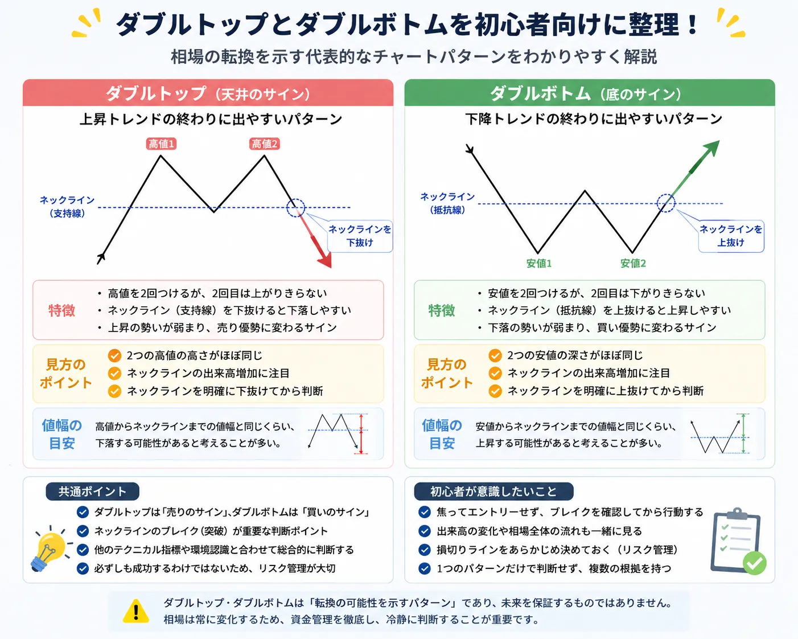

まずはチャートの基本から押さえよう

ダブルトップとダブルボトムは、チャート分析でよく使われる代表的なパターンです。
ただし、形が出たからといって必ず相場が反転するわけではありません。
まずはローソク足の見方を初心者向けに解説で値動きの基本を確認し、チャートパターンは分析材料の一つとして理解していきましょう。
Double Top
ダブルトップとは？
ダブルトップとは、高値圏で現れやすいチャートパターンです。価格が一度上昇して高値をつけたあと下落し、再び同じような高値付近まで上昇するものの、そこから再度下がる形を指します。見た目としては、山が2つ並ぶような形になります。
形のイメージ
ダブルトップの形
1つ目の山で高値をつけたあと、いったん下落します。その後、もう一度上昇しても前回高値付近で止まり、再び下落する形です。2つの山の間にある安値付近は、売買判断で意識されやすいラインになります。
注目される理由
なぜ注目されるのか？
2回上昇しても高値を明確に超えられない場合、買いの勢いが弱まっていると考える人が増えます。利益確定の売りや、新規の売りが入りやすくなるため、上昇が一服するサインとして注目されます。
Double Bottom
ダブルボトムとは？
ダブルボトムとは、安値圏で現れやすいチャートパターンです。価格が一度下落して安値をつけたあと反発し、再び同じような安値付近まで下がるものの、そこから再度上昇する形を指します。見た目としては、谷が2つ並ぶような形です。
形のイメージ
ダブルボトムの形
1つ目の谷で安値をつけたあと、いったん反発します。その後、再び安値付近まで下がっても大きく割り込まず、もう一度上昇する形です。2つの谷の間にある高値付近は、上昇転換を考えるうえで意識されやすいポイントです。
注目される理由
なぜ注目されるのか？
2回下落しても安値を大きく割り込まない場合、売りの勢いが弱まっていると考える人が増えます。買い支えや売り方の買い戻しが意識され、下落が一服するサインとして見られることがあります。
Comparison
ダブルトップとダブルボトムの違い
どちらも「2回試して突破できなかった」という考え方が基本です。ただし、出現しやすい場所や投資家心理は反対になります。
※表は横にスクロールできます。
| 項目 | ダブルトップ | ダブルボトム |
|---|---|---|
| 出現しやすい場所 | 上昇後の高値圏 | 下落後の安値圏 |
| チャートの見え方 | 山が2つ並ぶ形 | 谷が2つ並ぶ形 |
| 投資家心理 | 高値を超えられず、利益確定や売りが意識されやすい | 安値を割り込まず、買い支えや買い戻しが意識されやすい |
| 初心者が意識したいポイント | 形だけで空売りや売却を決めない | 反発期待だけで飛び乗らない |
相場全体が上昇基調なのか、横ばいなのかでも見方は変わります。あわせてトレンド相場とレンジ相場の違いとは？も確認しておくと、パターンの位置づけを理解しやすくなります。
Market Psychology
投資家心理から考えるダブルトップとダブルボトム
チャートパターンは、単なる図形ではなく、買い手と売り手の行動が集まってできるものです。
利益確定が増える場面
上昇後に前回高値付近まで戻ると、「ここで利益を確定したい」と考える人が増えやすくなります。これがダブルトップ形成の背景になることがあります。
損切りが増える場面
重要な安値や高値を抜けると、想定と違った人の損切りが増え、値動きが加速することがあります。ライン分析と一緒に見ることが大切です。
買いと売りの攻防
同じ価格帯で何度も止まると、その価格帯を意識する参加者が増えます。サポートやレジスタンスと組み合わせると、なぜ注目されるのかが見えやすくなります。
関連して、チャートのサインを初心者向けに解説や、サポートラインとレジスタンスラインとは？も確認しておくと、価格帯が意識される理由を理解しやすくなります。
Risk
チャートパターンを過信してはいけない理由
- ダブルトップやダブルボトムが出ても、必ず予想通りに動くとは限らない
- 一度パターンに見えても、その後に高値や安値を更新して失敗することがある
- 相場に絶対はなく、ニュースや金利、決算、経済指標などで値動きが変わることもある
- 分析よりも先に、損切り位置や資金管理を決めておくことが重要
チャートパターンは、売買判断のすべてではありません。実際に取引を考える場合は、エントリータイミングの考え方とは？や、投資ルールを決める重要性とは？も合わせて確認しておきましょう。
Common Mistakes
初心者がやりがちな失敗
形だけで判断する
山が2つ、谷が2つに見えただけで売買を決めるのは危険です。どの時間軸で見ているのか、直前の相場状況はどうかも確認しましょう。
他の要素を確認しない
出来高、トレンド、サポートライン、レジスタンスラインなどを見ずに判断すると、だましの動きに振り回されやすくなります。
焦って飛び乗る
「反転しそう」と感じてすぐ入ると、パターンが完成する前に逆方向へ動くことがあります。確認するポイントを決めてから判断することが大切です。
損切りを考えない
想定と違った場合にどうするかを決めていないと、損失が大きくなることがあります。チャート分析とリスク管理はセットで考えましょう。
Basic Mindset
初心者が覚えておきたいこと
-
チャートパターンは分析の補助と考える
ダブルトップやダブルボトムは、相場を考えるための材料です。未来を保証するものではありません。
-
他の分析と組み合わせる
トレンド、ライン、ローソク足、出来高などを合わせて確認すると、判断の偏りを減らしやすくなります。
-
冷静な判断とリスク管理を優先する
どれだけ有名なパターンでも、想定外の値動きは起こります。損切りや資金管理を先に決めることが大切です。
Summary
まとめ
ダブルトップとダブルボトムは、チャート分析でよく使われる有名なパターンです。ダブルトップは高値圏で山が2つ並ぶ形、ダブルボトムは安値圏で谷が2つ並ぶ形として知られています。
どちらも投資家心理が反映されやすく、相場の勢いが変化している可能性を考える材料になります。ただし、分析の参考にはなっても、将来の値動きを保証するものではありません。
初心者は、まず形と考え方を理解し、損小利大とは？や出口戦略とは？も合わせて、冷静な判断とリスク管理を意識していきましょう。
よくある質問
-
Q. ダブルトップとは何ですか？
ダブルトップとは、高値圏で山が2つ並ぶように見えるチャートパターンです。上昇の勢いが弱まり、売り圧力が意識されやすい形として知られています。 -
Q. ダブルボトムとは何ですか？
ダブルボトムとは、安値圏で谷が2つ並ぶように見えるチャートパターンです。下落の勢いが弱まり、買い支えが意識されやすい形として使われます。 -
Q. ダブルトップが出たら必ず下がりますか？
必ず下がるわけではありません。チャートパターンは分析の補助であり、相場環境や他の分析材料と合わせて確認することが大切です。 -
Q. 初心者でもチャートパターンを活用できますか？
基本的な考え方を学ぶことはできます。ただし、形だけで判断せず、損切りや資金管理も含めて慎重に考えることが重要です。
一般ユーザー目線の体験でおすすめの会社をご紹介

ご利用にあたっての注意事項
本記事は情報提供を目的としており、投資の勧誘を目的としたものではありません。株式・投資信託・外国証券・FX等の取引は元本保証がなく、相場変動等により損失が生じる場合があります。取引開始前に、契約締結前交付書面や商品説明書、目論見書等を必ずご確認のうえ、ご自身の判断と責任でお取引ください。